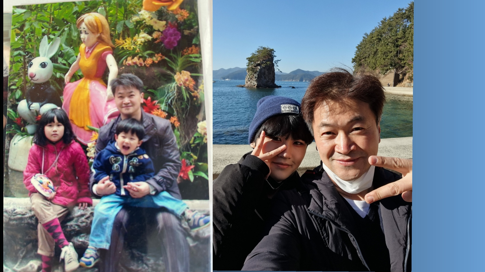

To. 아빠

아빠, 나 여진이야. 최근에 내가 기다리는 시간이 생겼어.
원래도 혼자 여기저기 걸어다니는 것을 좋아했지만, 요즘은 아빠랑 같이 걷는 시간이 그렇게 좋더라.
어떨 땐 아빠가 미래의 나같다는 생각을 하기도 해. 미래에 내가 아빠같은 사람이 되고 싶은 걸수도..
아빠랑 함께할 수 있는 시간이 주말이나 공휴일로 가끔은 좀 아쉽게도 느껴지지만,
그럴수록 함께하는 시간을 더욱 소중하게 생각하고 보낼 수 있는 거 아니겠어?
시간은 상대적이기도 해. 절대적인 시간도 중요하지만, 아빠랑 같이 생각을 나누고 웃다보면, 시간이 금새 지나가는 것도 그 일종이야.
계획 세우고, 시간을 지키는 것도 좋지만(우리가 잘하고 좋아하는 거지)
가끔은 우리 발 가는대로, 마음가는 대로 같이 걸어가보자.
인생이란 여정에서 아빠는 나에게 햇빛과도 같아. 따뜻하고, 사랑과 열정이 타오르는 태양, 아빠.
고마워, 항상 나와 함께 해 줘서!
사랑해 아빠.